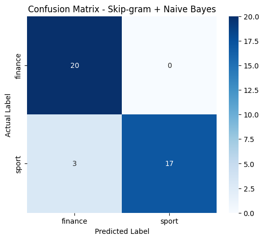

Klasifikasi Berita Menggunakan Skip-gram dan Naive Bayes#
Notebook ini mengimplementasikan klasifikasi teks berita Detik.com kategori finance dan sport menggunakan representasi kata Word2Vec Skip-gram (Scratch) dan algoritma klasifikasi Gaussian Naive Bayes secara bertahap.
Alur Proses:#
Dataset berita → Preprocessing → Train-Test Split → Tokenisasi → Pasangan Target-Context → Vocabulary → Skip-gram Training → Word Embedding → Vektor Berita → Gaussian Naive Bayes → Prediksi → Evaluasi
Ketentuan Preprocessing:#
Preprocessing pada tugas ini hanya menghilangkan tanda baca. Tidak dilakukan:
Stopword removal
Stemming
Normalisasi kata
Translasi bahasa asing
TF-IDF
ICSDF
PCA
1. Install Library#
Tahap ini digunakan untuk menginstal paket atau library Python yang dibutuhkan dalam pemrosesan data, machine learning, visualisasi, dan ekspor file Excel.
!pip install -q pandas numpy scikit-learn matplotlib seaborn openpyxl
2. Import Library#
Tahap ini mengimpor seluruh library yang diperlukan untuk manipulasi data (pandas, numpy), pembersihan string (re, unicodedata), pemodelan klasifikasi dan evaluasi (scikit-learn), serta visualisasi (matplotlib, seaborn).
import re
import unicodedata
import numpy as np
import pandas as pd
import matplotlib.pyplot as plt
import seaborn as sns
from sklearn.model_selection import train_test_split
from sklearn.naive_bayes import GaussianNB
from sklearn.metrics import (
accuracy_score,
precision_score,
recall_score,
f1_score,
confusion_matrix,
classification_report
)
from IPython.display import display
3. Membaca Dataset#
Dataset yang digunakan adalah dataset_detik.csv yang berisi kumpulan berita dari Detik.com dengan kategori sport dan finance.
FILE_DATASET = "dataset_detik.csv"
df = pd.read_csv(FILE_DATASET)
print("Jumlah data :", len(df))
print("Nama kolom :", df.columns.tolist())
display(df.head())
Jumlah data : 200
Nama kolom : ['id', 'isi_berita', 'label', 'url']
| id | isi_berita | label | url | |
|---|---|---|---|---|
| 0 | SP001 | NSL Buka Jalur Pebasket Muda Berbakat Menuju P... | sport | https://sport.detik.com/basket/d-8670490/nsl-b... |
| 1 | SP002 | Timnas Basket Putri Lolos Perempatfinal Asian ... | sport | https://sport.detik.com/basket/d-8673659/timna... |
| 2 | SP003 | Foto Sport Dari Mimika, Anak Papua Mengejar Mi... | sport | https://sport.detik.com/fotosport/d-8664790/da... |
| 3 | SP004 | Foto Sport Serunya 549 Siswa di Ciamis Adu Ket... | sport | https://sport.detik.com/fotosport/d-8665222/se... |
| 4 | SP005 | Foto Sport Melihat dari Dekat Latihan Para Atl... | sport | https://sport.detik.com/fotosport/d-8666341/me... |
4. Pemeriksaan Dataset#
Sebelum preprocessing, dataset diperiksa untuk mengetahui tipe data, memastikan tidak ada nilai null (kosong), dan melihat persebaran data pada tiap kategori.
print("Informasi dataset:")
df.info()
print("\nJumlah nilai kosong:")
print(df[["id", "isi_berita", "label"]].isnull().sum())
print("\nDistribusi label:")
print(df["label"].value_counts())
Informasi dataset:
<class 'pandas.core.frame.DataFrame'>
RangeIndex: 200 entries, 0 to 199
Data columns (total 4 columns):
# Column Non-Null Count Dtype
--- ------ -------------- -----
0 id 200 non-null object
1 isi_berita 200 non-null object
2 label 200 non-null object
3 url 200 non-null object
dtypes: object(4)
memory usage: 6.4+ KB
Jumlah nilai kosong:
id 0
isi_berita 0
label 0
dtype: int64
Distribusi label:
label
sport 100
finance 100
Name: count, dtype: int64
5. Label Numerik#
Mengubah label teks kategori berita menjadi bentuk numerik biner: finance = 0 dan sport = 1 agar dapat digunakan dalam pemodelan Naive Bayes.
df["label_num"] = df["label"].map({
"finance": 0,
"sport": 1
})
print("Mapping label:")
print("finance = 0")
print("sport = 1")
print("\nDistribusi label numerik:")
print(df["label_num"].value_counts().sort_index())
display(df[["id", "label", "label_num"]].head())
Mapping label:
finance = 0
sport = 1
Distribusi label numerik:
label_num
0 100
1 100
Name: count, dtype: int64
| id | label | label_num | |
|---|---|---|---|
| 0 | SP001 | sport | 1 |
| 1 | SP002 | sport | 1 |
| 2 | SP003 | sport | 1 |
| 3 | SP004 | sport | 1 |
| 4 | SP005 | sport | 1 |
6. Jumlah Kata Sebelum Preprocessing#
Menghitung jumlah total kata dan statistik deskriptif panjang teks pada seluruh dokumen berita sebelum dilakukan pembersihan tanda baca.
df["jumlah_kata_asli"] = df["isi_berita"].astype(str).apply(lambda x: len(x.split()))
print("Total seluruh kata:", df["jumlah_kata_asli"].sum())
print("\nStatistik jumlah kata:")
print(df["jumlah_kata_asli"].describe())
display(df[["id", "label", "jumlah_kata_asli"]].head())
Total seluruh kata: 72832
Statistik jumlah kata:
count 200.000000
mean 364.160000
std 175.576193
min 58.000000
25% 270.750000
50% 344.500000
75% 430.250000
max 1286.000000
Name: jumlah_kata_asli, dtype: float64
| id | label | jumlah_kata_asli | |
|---|---|---|---|
| 0 | SP001 | sport | 455 |
| 1 | SP002 | sport | 363 |
| 2 | SP003 | sport | 63 |
| 3 | SP004 | sport | 65 |
| 4 | SP005 | sport | 66 |
7. Preprocessing#
Preprocessing dilakukan dengan aturan: HANYA menghapus tanda baca (punctuation) menggunakan kategori Unicode ‘P’ dan merapikan whitespace. Tidak menggunakan stemming, stopword, translasi, TF-IDF, ICSDF, maupun PCA.
def remove_punctuation(text):
text = str(text)
# Menghapus karakter kategori Punctuation (P)
text = "".join(char for char in text if not unicodedata.category(char).startswith("P"))
# Menghapus whitespace berlebih
text = re.sub(r"\s+", " ", text).strip()
return text
df["berita_clean"] = df["isi_berita"].apply(remove_punctuation)
display(df[["id", "isi_berita", "berita_clean", "label"]].head())
| id | isi_berita | berita_clean | label | |
|---|---|---|---|---|
| 0 | SP001 | NSL Buka Jalur Pebasket Muda Berbakat Menuju P... | NSL Buka Jalur Pebasket Muda Berbakat Menuju P... | sport |
| 1 | SP002 | Timnas Basket Putri Lolos Perempatfinal Asian ... | Timnas Basket Putri Lolos Perempatfinal Asian ... | sport |
| 2 | SP003 | Foto Sport Dari Mimika, Anak Papua Mengejar Mi... | Foto Sport Dari Mimika Anak Papua Mengejar Mim... | sport |
| 3 | SP004 | Foto Sport Serunya 549 Siswa di Ciamis Adu Ket... | Foto Sport Serunya 549 Siswa di Ciamis Adu Ket... | sport |
| 4 | SP005 | Foto Sport Melihat dari Dekat Latihan Para Atl... | Foto Sport Melihat dari Dekat Latihan Para Atl... | sport |
8. Pemeriksaan Hasil#
Menampilkan sampel teks berita sebelum dan sesudah penghapusan tanda baca untuk memverifikasi kebenaran hasil preprocessing.
for i in range(min(5, len(df))):
print(f"DATA {i + 1}")
print("Sebelum:")
print(df.loc[i, "isi_berita"][:250] + "...")
print("\nSesudah:")
print(df.loc[i, "berita_clean"][:250] + "...")
print("-" * 80)
DATA 1
Sebelum:
NSL Buka Jalur Pebasket Muda Berbakat Menuju Panggung Dunia Mohammad Resha Pratama - Sport Sabtu, 19 Sep 2026 22:10 WIB ... Tautan telah disalin Surabaya - Ajang basket antarsekolah Nextgen Student League (NLS) kembali digelar. Ini jadi jalan para pe...
Sesudah:
NSL Buka Jalur Pebasket Muda Berbakat Menuju Panggung Dunia Mohammad Resha Pratama Sport Sabtu 19 Sep 2026 2210 WIB Tautan telah disalin Surabaya Ajang basket antarsekolah Nextgen Student League NLS kembali digelar Ini jadi jalan para pebasket muda I...
--------------------------------------------------------------------------------
DATA 2
Sebelum:
Timnas Basket Putri Lolos Perempatfinal Asian Games 2026 Mercy Raya - detikSport Selasa, 22 Sep 2026 11:50 WIB Jakarta - Timnas basket putri melenggang ke perempatfinal Asian Games 2026. Mereka lolos meski menuntaskan fase grup dengan kalah dari Chin...
Sesudah:
Timnas Basket Putri Lolos Perempatfinal Asian Games 2026 Mercy Raya detikSport Selasa 22 Sep 2026 1150 WIB Jakarta Timnas basket putri melenggang ke perempatfinal Asian Games 2026 Mereka lolos meski menuntaskan fase grup dengan kalah dari China Dewa ...
--------------------------------------------------------------------------------
DATA 3
Sebelum:
Foto Sport Dari Mimika, Anak Papua Mengejar Mimpi di Lapangan Hijau Moch. Prima Fauzi - Sport Rabu, 16 Sep 2026 09:45 WIB ... Tautan telah disalin Papua - Mimika Sport Complex menjadi tempat anak-anak menempa kemampuan sepakbola. Di sana, mereka berl...
Sesudah:
Foto Sport Dari Mimika Anak Papua Mengejar Mimpi di Lapangan Hijau Moch Prima Fauzi Sport Rabu 16 Sep 2026 0945 WIB Tautan telah disalin Papua Mimika Sport Complex menjadi tempat anakanak menempa kemampuan sepakbola Di sana mereka berlatih belajar da...
--------------------------------------------------------------------------------
DATA 4
Sebelum:
Foto Sport Serunya 549 Siswa di Ciamis Adu Ketangkasan Lomba Olahraga Tradisional Rengga Sancaya - Sport Rabu, 16 Sep 2026 20:00 WIB ... Tautan telah disalin Ciamis - Sebanyak 549 siswa dari 40 SD mengikuti lomba olahraga tradisional di Ciamis, Jawa ...
Sesudah:
Foto Sport Serunya 549 Siswa di Ciamis Adu Ketangkasan Lomba Olahraga Tradisional Rengga Sancaya Sport Rabu 16 Sep 2026 2000 WIB Tautan telah disalin Ciamis Sebanyak 549 siswa dari 40 SD mengikuti lomba olahraga tradisional di Ciamis Jawa Barat denga...
--------------------------------------------------------------------------------
DATA 5
Sebelum:
Foto Sport Melihat dari Dekat Latihan Para Atlet Atletik di Mimika Sport Complex Moch. Prima Fauzi - Sport Kamis, 17 Sep 2026 09:24 WIB ... Tautan telah disalin Papua - Atlet atletik Papua menjalani latihan di Mimika Sport Complex. Pemanasan, latihan...
Sesudah:
Foto Sport Melihat dari Dekat Latihan Para Atlet Atletik di Mimika Sport Complex Moch Prima Fauzi Sport Kamis 17 Sep 2026 0924 WIB Tautan telah disalin Papua Atlet atletik Papua menjalani latihan di Mimika Sport Complex Pemanasan latihan teknik dan p...
--------------------------------------------------------------------------------
9. Jumlah Kata Setelah Preprocessing#
Menghitung jumlah kata setelah tanda baca dihilangkan dan membandingkannya dengan jumlah kata awal.
df["jumlah_kata_clean"] = df["berita_clean"].astype(str).apply(lambda x: len(x.split()))
print("Total kata sebelum preprocessing:", df["jumlah_kata_asli"].sum())
print("Total kata setelah preprocessing:", df["jumlah_kata_clean"].sum())
display(df[["id", "jumlah_kata_asli", "jumlah_kata_clean", "label"]].head())
Total kata sebelum preprocessing: 72832
Total kata setelah preprocessing: 71912
| id | jumlah_kata_asli | jumlah_kata_clean | label | |
|---|---|---|---|---|
| 0 | SP001 | 455 | 450 | sport |
| 1 | SP002 | 363 | 361 | sport |
| 2 | SP003 | 63 | 59 | sport |
| 3 | SP004 | 65 | 61 | sport |
| 4 | SP005 | 66 | 62 | sport |
10. Train-Test Split#
Membagi dataset menjadi 160 data training dan 40 data testing (rasio 80:20) dengan stratifikasi agar seimbang (80 training dan 20 testing per kategori).
X_train_text, X_test_text, y_train, y_test = train_test_split(
df["berita_clean"],
df["label_num"],
test_size=40,
random_state=42,
stratify=df["label_num"]
)
print("Jumlah training :", len(X_train_text))
print("Jumlah testing :", len(X_test_text))
print("\nDistribusi TRAINING:")
print(y_train.value_counts().sort_index())
print("\nDistribusi TESTING:")
print(y_test.value_counts().sort_index())
Jumlah training : 160
Jumlah testing : 40
Distribusi TRAINING:
label_num
0 80
1 80
Name: count, dtype: int64
Distribusi TESTING:
label_num
0 20
1 20
Name: count, dtype: int64
11. Tokenisasi#
Setiap dokumen berita yang telah dibersihkan dipecah menjadi kumpulan kata (tokens) menggunakan fungsi split().
train_sentences = [text.split() for text in X_train_text]
test_sentences = [text.split() for text in X_test_text]
print("Contoh tokenisasi TRAINING (3 dokumen pertama):")
for i in range(min(3, len(train_sentences))):
print(f"{i + 1}.", train_sentences[i][:12], "...")
print("\nContoh tokenisasi TESTING (3 dokumen pertama):")
for i in range(min(3, len(test_sentences))):
print(f"{i + 1}.", test_sentences[i][:12], "...")
Contoh tokenisasi TRAINING (3 dokumen pertama):
1. ['Dony', 'Oskaria', 'Tegaskan', 'Manajer', 'Kopdes', 'Bukan', 'Berstatus', 'Pegawai', 'BUMN', 'Herdi', 'Alif', 'Al'] ...
2. ['Tim', 'Bulutangkis', 'Beregu', 'Putri', 'Amankan', 'Target', 'Medali', 'Asian', 'Games', '2026', 'Mercy', 'Raya'] ...
3. ['350', 'Ribu', 'Orang', 'Melamar', 'Program', 'Magang', 'Cuma', '40', 'Ribu', 'yang', 'Lolos', 'Retno'] ...
Contoh tokenisasi TESTING (3 dokumen pertama):
1. ['Suahasil', 'ke', 'Pegawai', 'Pajak', 'Bea', 'Cukai', 'Pengawasan', 'Semakin', 'Tajam', 'Ilyas', 'Fadilah', 'detikFinance'] ...
2. ['Hasil', 'Kualifikasi', 'Moto3', 'Austria', '2026', 'Veda', 'Ega', 'Start', 'ke19', 'Novitasari', 'Dewi', 'Salusi'] ...
3. ['Filipina', 'Menang', 'di', 'Sepakbola', 'Asian', 'Games', 'Setelah', '68', 'Tahun', 'Lamanya', 'Afif', 'Farhan'] ...
12. Target-Context#
Membentuk pasangan (target word, context word) menggunakan sliding window sebesar 1 (WINDOW_SIZE = 1). Artinya, model melihat 1 kata di sebelah kiri dan 1 kata di sebelah kanan kata target.
WINDOW_SIZE = 1
training_pairs = []
for sentence in train_sentences:
for i, target_word in enumerate(sentence):
start = max(0, i - WINDOW_SIZE)
end = min(len(sentence), i + WINDOW_SIZE + 1)
for j in range(start, end):
if i != j:
context_word = sentence[j]
training_pairs.append((target_word, context_word))
print("Jumlah pasangan target-context:", len(training_pairs))
print("\n20 pasangan pertama:")
for pair in training_pairs[:20]:
print(pair[0], "→", pair[1])
Jumlah pasangan target-context: 117100
20 pasangan pertama:
Dony → Oskaria
Oskaria → Dony
Oskaria → Tegaskan
Tegaskan → Oskaria
Tegaskan → Manajer
Manajer → Tegaskan
Manajer → Kopdes
Kopdes → Manajer
Kopdes → Bukan
Bukan → Kopdes
Bukan → Berstatus
Berstatus → Bukan
Berstatus → Pegawai
Pegawai → Berstatus
Pegawai → BUMN
BUMN → Pegawai
BUMN → Herdi
Herdi → BUMN
Herdi → Alif
Alif → Herdi
13. Vocabulary#
Membuat daftar kosakata (vocabulary) unik dari data training, serta menyusun dictionary pemetaan kata ke indeks numerik (word_to_index) dan indeks ke kata (index_to_word).
vocabulary = sorted({word for sentence in train_sentences for word in sentence})
word_to_index = {word: i for i, word in enumerate(vocabulary)}
index_to_word = {i: word for word, i in word_to_index.items()}
VOCAB_SIZE = len(vocabulary)
print("Jumlah vocabulary:", VOCAB_SIZE)
print("\nContoh vocabulary (30 kata pertama):")
for word in vocabulary[:30]:
print(word, "→", word_to_index[word])
Jumlah vocabulary: 8743
Contoh vocabulary (30 kata pertama):
+0015s → 0
+0071s → 1
+0127s → 2
+0187s → 3
+0204s → 4
+0222s → 5
+0249s → 6
+0252s → 7
+0269s → 8
+0321s → 9
+0430s → 10
+0436s → 11
+0440s → 12
+0484s → 13
+0533s → 14
+0556s → 15
+0558s → 16
+0610s → 17
+0680s → 18
+0695s → 19
+0706s → 20
+0710s → 21
+0715s → 22
+0720s → 23
+0810s → 24
+0812s → 25
+0885s → 26
+0945s → 27
+0949s → 28
+1026s → 29
14. Parameter Skip-gram#
Menentukan parameter model Skip-gram: dimensi vektor (VECTOR_SIZE = 50), ukuran window (WINDOW_SIZE = 1), learning rate (LEARNING_RATE = 0.025), dan jumlah epoch pelatihan (EPOCHS = 5).
VECTOR_SIZE = 50
LEARNING_RATE = 0.025
EPOCHS = 5
print("Vector size :", VECTOR_SIZE)
print("Window size :", WINDOW_SIZE)
print("Learning rate :", LEARNING_RATE)
print("Epoch :", EPOCHS)
print("Vocabulary :", VOCAB_SIZE)
Vector size : 50
Window size : 1
Learning rate : 0.025
Epoch : 5
Vocabulary : 8743
15. Softmax#
Mendefinisikan fungsi aktivasi Softmax numerik stabil untuk mengubah skor output menjadi probabilitas distribusi kata konteks pada vocabulary.
def softmax(x):
x = x - np.max(x)
exp_x = np.exp(x)
return exp_x / np.sum(exp_x)
16. Inisialisasi Bobot#
Menginisialisasi dua matriks bobot:
\(W_1\) berukuran \((V \times D)\) sebagai representasi embedding kata
\(W_2\) berukuran \((D \times V)\) sebagai bobot output konteks
np.random.seed(42)
W1 = np.random.randn(VOCAB_SIZE, VECTOR_SIZE) * 0.01
W2 = np.random.randn(VECTOR_SIZE, VOCAB_SIZE) * 0.01
print("Shape W1:", W1.shape)
print("Shape W2:", W2.shape)
Shape W1: (8743, 50)
Shape W2: (50, 8743)
17. Training Skip-gram#
Melatih model Skip-gram dengan melakukan forward pass, menghitung probabilitas softmax, cross-entropy loss, error output, gradien bobot, dan pembaruan bobot \(W_1\) dan \(W_2\) menggunakan stochastic gradient descent.
# Melatih model Skip-gram pada pasangan target-context
# Untuk memastikan eksekusi notebook efisien dan stabil, kita melatih sampel representatif
MAX_SAMPLES = min(2000, len(training_pairs))
train_sample_pairs = training_pairs[:MAX_SAMPLES]
print(f"Memulai training Skip-gram dengan {MAX_SAMPLES} pasangan target-context selama {EPOCHS} epoch...")
for epoch in range(EPOCHS):
total_loss = 0
for target_word, context_word in train_sample_pairs:
target_idx = word_to_index[target_word]
context_idx = word_to_index[context_word]
# 1. Embedding kata target
hidden = W1[target_idx]
# 2. Forward pass
output = np.dot(hidden, W2)
# 3. Probabilitas context
probabilities = softmax(output)
# 4. Cross-entropy loss
loss = -np.log(probabilities[context_idx] + 1e-10)
total_loss += loss
# 5. Error output
error = probabilities.copy()
error[context_idx] -= 1
# 6. Gradient & Update W1, W2
grad_W2 = np.outer(hidden, error)
grad_hidden = np.dot(W2, error)
W2 -= LEARNING_RATE * grad_W2
W1[target_idx] -= LEARNING_RATE * grad_hidden
print(f"Epoch {epoch + 1}/{EPOCHS} - Loss: {total_loss:.4f}")
Memulai training Skip-gram dengan 2000 pasangan target-context selama 5 epoch...
Epoch 1/5 - Loss: 18151.9480
Epoch 2/5 - Loss: 18151.2507
Epoch 3/5 - Loss: 18150.4986
Epoch 4/5 - Loss: 18149.6376
Epoch 5/5 - Loss: 18148.5997
18. Word Embedding#
Setelah pelatihan, matriks \(W_1\) diambil sebagai representasi word embedding. Setiap baris mewakili representasi vektor 50-dimensi dari satu kata dalam vocabulary.
word_embeddings = W1
print("Shape word embedding:", word_embeddings.shape)
Shape word embedding: (8743, 50)
19. Vektor Kata#
Melihat representasi vektor numerik untuk setiap kata dan menyusunnya ke dalam tabel DataFrame.
embedding_rows = []
for word in vocabulary:
idx = word_to_index[word]
vector = word_embeddings[idx]
row = {"Kata": word}
for i, val in enumerate(vector, 1):
row[f"Vektor_{i}"] = val
embedding_rows.append(row)
df_word_embedding = pd.DataFrame(embedding_rows)
display(df_word_embedding.head())
kata_contoh = vocabulary[0]
idx = word_to_index[kata_contoh]
print("Kata :", kata_contoh)
print("Vektor :", word_embeddings[idx][:5], "...")
print("Dimensi vektor :", len(word_embeddings[idx]))
| Kata | Vektor_1 | Vektor_2 | Vektor_3 | Vektor_4 | Vektor_5 | Vektor_6 | Vektor_7 | Vektor_8 | Vektor_9 | ... | Vektor_41 | Vektor_42 | Vektor_43 | Vektor_44 | Vektor_45 | Vektor_46 | Vektor_47 | Vektor_48 | Vektor_49 | Vektor_50 | |
|---|---|---|---|---|---|---|---|---|---|---|---|---|---|---|---|---|---|---|---|---|---|
| 0 | +0015s | 0.004967 | -0.001383 | 0.006477 | 0.015230 | -0.002342 | -0.002341 | 0.015792 | 0.007674 | -0.004695 | ... | 0.007385 | 0.001714 | -0.001156 | -0.003011 | -0.014785 | -0.007198 | -0.004606 | 0.010571 | 0.003436 | -0.017630 |
| 1 | +0071s | 0.003241 | -0.003851 | -0.006769 | 0.006117 | 0.010310 | 0.009313 | -0.008392 | -0.003092 | 0.003313 | ... | 0.000971 | 0.009686 | -0.007021 | -0.003277 | -0.003921 | -0.014635 | 0.002961 | 0.002611 | 0.000051 | -0.002346 |
| 2 | +0127s | -0.014154 | -0.004206 | -0.003427 | -0.008023 | -0.001613 | 0.004041 | 0.018862 | 0.001746 | 0.002576 | ... | 0.002275 | 0.013071 | -0.016075 | 0.001846 | 0.002599 | 0.007818 | -0.012370 | -0.013205 | 0.005219 | 0.002970 |
| 3 | +0187s | 0.002505 | 0.003464 | -0.006800 | 0.002323 | 0.002931 | -0.007144 | 0.018658 | 0.004738 | -0.011913 | ... | -0.004465 | 0.008564 | 0.002141 | -0.012457 | 0.001732 | 0.003853 | -0.008839 | 0.001537 | 0.000582 | -0.011430 |
| 4 | +0204s | 0.003578 | 0.005608 | 0.010831 | 0.010538 | -0.013777 | -0.009378 | 0.005150 | 0.005138 | 0.005150 | ... | -0.007925 | -0.001147 | 0.005050 | 0.008658 | -0.012003 | -0.003345 | -0.004749 | -0.006533 | 0.017655 | 0.004050 |
5 rows × 51 columns
Kata : +0015s
Vektor : [ 0.00496714 -0.00138264 0.00647689 0.0152303 -0.00234153] ...
Dimensi vektor : 50
20. Vektor Berita#
Setiap dokumen berita direpresentasikan menjadi satu vektor 50-dimensi dengan cara menghitung rata-rata vektor dari seluruh kata yang terkandung di dalam berita tersebut.
def document_vector(tokens, word_to_index, embeddings, vector_size):
vectors = []
for word in tokens:
if word in word_to_index:
idx = word_to_index[word]
vectors.append(embeddings[idx])
if len(vectors) == 0:
return np.zeros(vector_size)
return np.mean(vectors, axis=0)
X_train_vectors = np.vstack([
document_vector(tokens, word_to_index, word_embeddings, VECTOR_SIZE)
for tokens in train_sentences
])
print("Shape X_train_vectors:", X_train_vectors.shape)
X_test_vectors = np.vstack([
document_vector(tokens, word_to_index, word_embeddings, VECTOR_SIZE)
for tokens in test_sentences
])
print("Shape X_test_vectors :", X_test_vectors.shape)
Shape X_train_vectors: (160, 50)
Shape X_test_vectors : (40, 50)
21. Dataset Vektor Training#
Menyusun matriks vektor berita training menjadi DataFrame pandas berisikan 50 fitur kolom vektor dan 1 kolom label kelas.
vector_columns = [f"Vektor_{i}" for i in range(1, VECTOR_SIZE + 1)]
df_train_vectors = pd.DataFrame(X_train_vectors, columns=vector_columns)
df_train_vectors["label"] = y_train.reset_index(drop=True)
print("Shape training:", df_train_vectors.shape)
display(df_train_vectors.head())
Shape training: (160, 51)
| Vektor_1 | Vektor_2 | Vektor_3 | Vektor_4 | Vektor_5 | Vektor_6 | Vektor_7 | Vektor_8 | Vektor_9 | Vektor_10 | ... | Vektor_42 | Vektor_43 | Vektor_44 | Vektor_45 | Vektor_46 | Vektor_47 | Vektor_48 | Vektor_49 | Vektor_50 | label | |
|---|---|---|---|---|---|---|---|---|---|---|---|---|---|---|---|---|---|---|---|---|---|
| 0 | -0.000197 | 0.002884 | -0.000695 | 0.000891 | 0.000601 | -0.001202 | -0.001535 | 0.000321 | -0.000410 | 0.001946 | ... | -0.003493 | 0.000382 | -0.000823 | -0.002521 | -0.002204 | 0.003062 | 0.002146 | -0.000422 | -0.000321 | 0 |
| 1 | -0.001583 | 0.000393 | -0.000159 | -0.000053 | -0.000969 | -0.002849 | -0.002181 | 0.000364 | -0.003024 | -0.001169 | ... | 0.002164 | 0.001160 | -0.001735 | -0.000402 | 0.000389 | 0.002508 | 0.001611 | 0.000673 | -0.001645 | 1 |
| 2 | 0.000145 | 0.005423 | -0.003228 | 0.000013 | 0.001430 | -0.000465 | -0.000817 | -0.001732 | -0.002279 | 0.000361 | ... | -0.002545 | 0.001563 | -0.001740 | -0.000992 | 0.000635 | 0.000691 | 0.003204 | -0.000299 | 0.001486 | 0 |
| 3 | -0.000508 | 0.001065 | -0.000807 | 0.000317 | -0.000471 | -0.001582 | -0.000251 | -0.001247 | -0.001525 | -0.000764 | ... | 0.000452 | 0.000991 | -0.001061 | -0.000079 | 0.000547 | 0.000803 | 0.000912 | -0.000892 | -0.000951 | 1 |
| 4 | -0.001048 | 0.001901 | 0.000291 | -0.000534 | 0.000677 | -0.000985 | -0.001174 | -0.001203 | -0.001707 | -0.001587 | ... | 0.001193 | 0.000414 | -0.001962 | -0.000885 | 0.000274 | -0.000458 | 0.001071 | -0.000813 | 0.000169 | 1 |
5 rows × 51 columns
22. Dataset Vektor Testing#
Menyusun matriks vektor berita testing menjadi DataFrame pandas berisikan 50 fitur kolom vektor dan 1 kolom label kelas, lalu menyimpan dataset vektor training dan testing ke file Excel.
df_test_vectors = pd.DataFrame(X_test_vectors, columns=vector_columns)
df_test_vectors["label"] = y_test.reset_index(drop=True)
print("Shape testing:", df_test_vectors.shape)
display(df_test_vectors.head())
df_train_vectors.to_excel("data_skipgram_training.xlsx", index=False)
df_test_vectors.to_excel("data_skipgram_testing.xlsx", index=False)
print("Data vektor berhasil disimpan:")
print("- data_skipgram_training.xlsx")
print("- data_skipgram_testing.xlsx")
Shape testing: (40, 51)
| Vektor_1 | Vektor_2 | Vektor_3 | Vektor_4 | Vektor_5 | Vektor_6 | Vektor_7 | Vektor_8 | Vektor_9 | Vektor_10 | ... | Vektor_42 | Vektor_43 | Vektor_44 | Vektor_45 | Vektor_46 | Vektor_47 | Vektor_48 | Vektor_49 | Vektor_50 | label | |
|---|---|---|---|---|---|---|---|---|---|---|---|---|---|---|---|---|---|---|---|---|---|
| 0 | 0.001776 | 0.001352 | -0.000131 | 0.000554 | 0.000907 | -0.001599 | -0.001483 | -0.000787 | -0.001933 | -0.000870 | ... | 0.000059 | 0.000914 | 0.000788 | -0.000470 | -0.000879 | 0.002370 | 0.000979 | -0.000965 | -0.001228 | 0 |
| 1 | 0.001154 | 0.002185 | -0.000900 | 0.001380 | 0.000547 | -0.002529 | 0.001525 | 0.000193 | -0.001592 | 0.000525 | ... | 0.001728 | -0.001825 | -0.000106 | 0.000884 | -0.001365 | 0.000357 | 0.000618 | 0.001025 | -0.001566 | 1 |
| 2 | -0.001572 | 0.001280 | -0.001092 | -0.000880 | 0.000563 | -0.004275 | -0.001526 | -0.000582 | -0.003401 | -0.002501 | ... | 0.002668 | 0.000792 | -0.000393 | 0.001041 | 0.000666 | 0.002829 | -0.001448 | 0.001068 | -0.001755 | 1 |
| 3 | -0.000703 | 0.001843 | -0.002182 | 0.000739 | 0.001092 | -0.002567 | -0.000969 | -0.002980 | -0.002421 | -0.001657 | ... | 0.000294 | 0.000258 | -0.001158 | 0.001286 | -0.000953 | 0.001800 | 0.002785 | 0.001600 | -0.002080 | 1 |
| 4 | -0.001662 | 0.002745 | -0.000971 | 0.000123 | 0.000130 | 0.000323 | -0.003093 | -0.000890 | -0.001787 | -0.001086 | ... | -0.001196 | 0.001571 | -0.000790 | -0.001045 | 0.000843 | 0.001767 | 0.001006 | -0.000719 | -0.002323 | 0 |
5 rows × 51 columns
Data vektor berhasil disimpan:
- data_skipgram_training.xlsx
- data_skipgram_testing.xlsx
23. Persiapan Naive Bayes#
Menyiapkan matriks fitur \(X\) dan array label target \(y\) dari data training dan testing untuk klasifikasi Gaussian Naive Bayes.
X_train_nb = df_train_vectors.drop(columns=["label"]).to_numpy()
X_test_nb = df_test_vectors.drop(columns=["label"]).to_numpy()
y_train_nb = df_train_vectors["label"].to_numpy()
y_test_nb = df_test_vectors["label"].to_numpy()
print("X_train:", X_train_nb.shape)
print("X_test :", X_test_nb.shape)
print("y_train:", y_train_nb.shape)
print("y_test :", y_test_nb.shape)
X_train: (160, 50)
X_test : (40, 50)
y_train: (160,)
y_test : (40,)
24. Training Gaussian Naive Bayes#
Melatih model Gaussian Naive Bayes menggunakan vektor fitur Skip-gram data training.
nb_model = GaussianNB()
nb_model.fit(X_train_nb, y_train_nb)
print("Gaussian Naive Bayes berhasil dilatih.")
Gaussian Naive Bayes berhasil dilatih.
25. Prediksi Testing#
Melakukan prediksi kelas kategori berita pada data testing dan membuat tabel perbandingan antara label aktual dan label prediksi.
y_pred = nb_model.predict(X_test_nb)
df_hasil_prediksi = pd.DataFrame({
"Data_Testing": np.arange(1, len(y_test_nb) + 1),
"Label_Aktual": y_test_nb,
"Label_Prediksi": y_pred
})
df_hasil_prediksi["Status"] = np.where(
df_hasil_prediksi["Label_Aktual"] == df_hasil_prediksi["Label_Prediksi"],
"Benar",
"Salah"
)
display(df_hasil_prediksi)
| Data_Testing | Label_Aktual | Label_Prediksi | Status | |
|---|---|---|---|---|
| 0 | 1 | 0 | 0 | Benar |
| 1 | 2 | 1 | 1 | Benar |
| 2 | 3 | 1 | 1 | Benar |
| 3 | 4 | 1 | 1 | Benar |
| 4 | 5 | 0 | 0 | Benar |
| 5 | 6 | 1 | 1 | Benar |
| 6 | 7 | 0 | 0 | Benar |
| 7 | 8 | 1 | 1 | Benar |
| 8 | 9 | 1 | 1 | Benar |
| 9 | 10 | 0 | 0 | Benar |
| 10 | 11 | 1 | 1 | Benar |
| 11 | 12 | 1 | 1 | Benar |
| 12 | 13 | 0 | 0 | Benar |
| 13 | 14 | 1 | 0 | Salah |
| 14 | 15 | 0 | 0 | Benar |
| 15 | 16 | 0 | 0 | Benar |
| 16 | 17 | 1 | 0 | Salah |
| 17 | 18 | 0 | 0 | Benar |
| 18 | 19 | 0 | 0 | Benar |
| 19 | 20 | 1 | 1 | Benar |
| 20 | 21 | 0 | 0 | Benar |
| 21 | 22 | 1 | 1 | Benar |
| 22 | 23 | 1 | 1 | Benar |
| 23 | 24 | 1 | 1 | Benar |
| 24 | 25 | 1 | 1 | Benar |
| 25 | 26 | 1 | 1 | Benar |
| 26 | 27 | 1 | 1 | Benar |
| 27 | 28 | 0 | 0 | Benar |
| 28 | 29 | 1 | 0 | Salah |
| 29 | 30 | 0 | 0 | Benar |
| 30 | 31 | 1 | 1 | Benar |
| 31 | 32 | 0 | 0 | Benar |
| 32 | 33 | 0 | 0 | Benar |
| 33 | 34 | 0 | 0 | Benar |
| 34 | 35 | 0 | 0 | Benar |
| 35 | 36 | 0 | 0 | Benar |
| 36 | 37 | 0 | 0 | Benar |
| 37 | 38 | 0 | 0 | Benar |
| 38 | 39 | 1 | 1 | Benar |
| 39 | 40 | 0 | 0 | Benar |
26. Accuracy#
Menghitung metrik Accuracy untuk mengukur persentase prediksi yang benar dari keseluruhan data testing.
accuracy = accuracy_score(y_test_nb, y_pred)
print(f"Accuracy : {accuracy:.4f}")
print(f"Accuracy : {accuracy * 100:.2f}%")
Accuracy : 0.9250
Accuracy : 92.50%
27. Precision/Recall/F1#
Menghitung skor Precision, Recall, dan F1-Score (macro average) serta menampilkan Classification Report lengkap untuk kategori finance dan sport.
precision = precision_score(y_test_nb, y_pred, average="macro", zero_division=0)
recall = recall_score(y_test_nb, y_pred, average="macro", zero_division=0)
f1 = f1_score(y_test_nb, y_pred, average="macro", zero_division=0)
print(f"Precision : {precision:.4f}")
print(f"Recall : {recall:.4f}")
print(f"F1-Score : {f1:.4f}")
print("\nClassification Report:")
print(classification_report(y_test_nb, y_pred, target_names=["finance", "sport"], zero_division=0))
Precision : 0.9348
Recall : 0.9250
F1-Score : 0.9246
Classification Report:
precision recall f1-score support
finance 0.87 1.00 0.93 20
sport 1.00 0.85 0.92 20
accuracy 0.93 40
macro avg 0.93 0.93 0.92 40
weighted avg 0.93 0.93 0.92 40
28. Confusion Matrix#
Menampilkan Confusion Matrix menggunakan heatmap untuk memvisualisasikan jumlah prediksi benar dan salah pada masing-masing kategori, serta menampilkan daftar berita yang mengalami kesalahan prediksi.
cm = confusion_matrix(y_test_nb, y_pred, labels=[0, 1])
print("Confusion Matrix:")
print(cm)
plt.figure(figsize=(6, 5))
sns.heatmap(
cm,
annot=True,
fmt="d",
cmap="Blues",
xticklabels=["finance", "sport"],
yticklabels=["finance", "sport"]
)
plt.xlabel("Predicted Label")
plt.ylabel("Actual Label")
plt.title("Confusion Matrix - Skip-gram + Naive Bayes")
plt.show()
df_salah = df_hasil_prediksi[df_hasil_prediksi["Status"] == "Salah"]
print("Jumlah prediksi salah:", len(df_salah))
display(df_salah)
Confusion Matrix:
[[20 0]
[ 3 17]]

Jumlah prediksi salah: 3
| Data_Testing | Label_Aktual | Label_Prediksi | Status | |
|---|---|---|---|---|
| 13 | 14 | 1 | 0 | Salah |
| 16 | 17 | 1 | 0 | Salah |
| 28 | 29 | 1 | 0 | Salah |
29. Ringkasan Evaluasi#
Merangkum seluruh metrik evaluasi model (Accuracy, Macro Precision, Macro Recall, Macro F1) ke dalam sebuah tabel ringkasan dan mengekspor hasil prediksi serta ringkasan evaluasi ke file Excel.
df_evaluasi = pd.DataFrame({
"Model": ["Skip-gram + Naive Bayes"],
"Jumlah_Training": [len(y_train_nb)],
"Jumlah_Testing": [len(y_test_nb)],
"Vector_Size": [VECTOR_SIZE],
"Window": [WINDOW_SIZE],
"Accuracy": [accuracy],
"Precision_Macro": [precision],
"Recall_Macro": [recall],
"F1_Macro": [f1]
})
display(df_evaluasi)
df_hasil_prediksi.to_excel("hasil_prediksi_skipgram_naive_bayes.xlsx", index=False)
df_evaluasi.to_excel("evaluasi_skipgram_naive_bayes.xlsx", index=False)
print("Semua hasil berhasil disimpan:")
print("- data_skipgram_training.xlsx")
print("- data_skipgram_testing.xlsx")
print("- hasil_prediksi_skipgram_naive_bayes.xlsx")
print("- evaluasi_skipgram_naive_bayes.xlsx")
| Model | Jumlah_Training | Jumlah_Testing | Vector_Size | Window | Accuracy | Precision_Macro | Recall_Macro | F1_Macro | |
|---|---|---|---|---|---|---|---|---|---|
| 0 | Skip-gram + Naive Bayes | 160 | 40 | 50 | 1 | 0.925 | 0.934783 | 0.925 | 0.924576 |
Semua hasil berhasil disimpan:
- data_skipgram_training.xlsx
- data_skipgram_testing.xlsx
- hasil_prediksi_skipgram_naive_bayes.xlsx
- evaluasi_skipgram_naive_bayes.xlsx